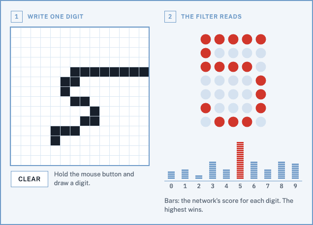

<title>fenet</title>
<meta name="claude:viewport-fit-sides" content="cover">
<link rel="preconnect" href="https://fonts.googleapis.com">
<link rel="preconnect" href="https://fonts.gstatic.com" crossorigin>
<link rel="stylesheet" href="https://fonts.googleapis.com/css2?family=IBM+Plex+Mono:wght@400;500&family=Public+Sans:ital,wght@0,400;0,600;0,800;1,400&display=swap">
<style>
/* Layout: a handwriting sample form. Two boxed fields side by side (the writer's box, the machine's
   reading), printed in dropout blue on white; the instructions run below like the back of the form. */
:root {
  --paper: #fbfcfd;
  --sheet: #f2f6fa;
  --cell: #ffffff;
  --dropout: #6f9bc8;
  --dropout-soft: #d5e3f1;
  --ink: #18202b;
  --muted: #586473;
  --mark: #d1362b;
  --font-ui: "Public Sans", "Helvetica Neue", Arial, sans-serif;
  --font-data: "IBM Plex Mono", ui-monospace, "SFMono-Regular", Menlo, Consolas, monospace;
}
@media (prefers-color-scheme: dark) {
  :root:not([data-theme="light"]) {
    --paper: #0e131a; --sheet: #141b24; --cell: #10161e; --dropout: #5a82ad; --dropout-soft: #22334a;
    --ink: #e9eef4; --muted: #95a2b2; --mark: #ff6b57; color-scheme: dark;
  }
}
:root[data-theme="dark"] {
  --paper: #0e131a; --sheet: #141b24; --cell: #10161e; --dropout: #5a82ad; --dropout-soft: #22334a;
  --ink: #e9eef4; --muted: #95a2b2; --mark: #ff6b57; color-scheme: dark;
}

body { background: var(--paper); color: var(--ink); font: 400 15px/1.55 var(--font-ui); }
.app {
  max-width: 980px; margin: 0 auto;
  padding-left: max(16px, env(safe-area-inset-left, 0px)); padding-right: max(16px, env(safe-area-inset-right, 0px));
  padding-block: 28px 56px;
  display: grid; gap: 28px;
}

/* masthead, set like the top strip of a form */
.formline { display: flex; flex-wrap: wrap; justify-content: space-between; gap: 4px 16px; border-bottom: 2px solid var(--dropout);
  padding-bottom: 6px; font: 500 11px/1.4 var(--font-data); letter-spacing: 0.08em; text-transform: uppercase; color: var(--dropout); }
h1 { font-weight: 800; font-size: clamp(44px, 9vw, 76px); line-height: 0.95; letter-spacing: -0.03em; margin: 18px 0 10px; }
.lede { max-width: 60ch; margin: 0; font-size: 17px; color: var(--ink); text-wrap: pretty; }
.lede em { font-style: normal; font-family: var(--font-data); font-size: 0.92em; }

/* the two fields */
.sheet { display: flex; flex-wrap: wrap; gap: 20px 32px; width: fit-content; max-width: 100%; box-sizing: border-box; background: var(--sheet); border: 2px solid var(--dropout); padding: 20px; }
.field { display: grid; gap: 10px; align-content: start; width: 280px; max-width: 100%; }
.fieldhead { display: flex; align-items: center; gap: 10px; font-size: 12px; font-weight: 600; letter-spacing: 0.07em; text-transform: uppercase; color: var(--dropout); }
.fieldno { display: inline-grid; place-items: center; width: 22px; height: 22px; border: 1.5px solid var(--dropout); font: 500 12px/1 var(--font-data); }

/* drawing: press and drag over the grid; a painted cell keeps its colour because its transition back waits a million seconds */
.grid { display: block; touch-action: none; user-select: none; -webkit-user-select: none; cursor: crosshair; outline: 2px solid var(--dropout); outline-offset: 0; background: var(--cell); }
.grid rect { fill: var(--cell); stroke: var(--dropout-soft); stroke-width: 0.045; transition: fill 0s 1000000s; }
.grid:active rect:hover { fill: var(--ink); transition: fill 0s; }
.mirror rect.m { fill: #000; transition: fill 0s 1000000s; }
/* the opening example lies on top of the pad and its mirror until the pad is first pressed: it hides while
   the pad is pressed, and the click checks the radio (the pad sits in a label for it, as Clear does) */
.ex { display: none; pointer-events: none; }
:where(.app:not(:has(.cl:checked)):not(:has(.pad:active))) .ex { display: inline; }
.grid .ex rect { fill: var(--ink); }
.mirror .ex rect { fill: #fff; }
.pad { display: block; width: fit-content; }
/*RULES*/
.app:has(.clear:active) .grid rect { fill: var(--cell); transition: none; }
.app:has(.clear:active) .mirror rect.m { fill: #000; transition: none; }

.controls { display: flex; align-items: center; gap: 12px; }
.cl { position: absolute; opacity: 0; width: 1px; height: 1px; pointer-events: none; }
.clear { font: 600 13px/1 var(--font-ui); letter-spacing: 0.04em; text-transform: uppercase; color: var(--ink); background: var(--cell);
  border: 1.5px solid var(--dropout); padding: 9px 14px; cursor: pointer; user-select: none; -webkit-user-select: none; }
.clear:hover { border-color: var(--ink); }
.clear:active { background: var(--dropout-soft); }
.cl:focus-visible + .clear { outline: 2px solid var(--mark); outline-offset: 2px; }
.hint { font-size: 13px; line-height: 1.4; color: var(--muted); }
.hint.touch { display: none; }
/* touchscreens: dragging doesn't move :hover, so say so before anyone drags */
@media (hover: none) and (pointer: coarse) {
  .hint.mouse { display: none; }
  .hint.touch { display: block; padding: 8px 10px; border: 1.5px solid var(--mark); color: var(--ink); }
}
.compat { margin: 10px 0 0; font-size: 14px; color: var(--muted); }
.compat a, .engine a { color: inherit; }
/* other engines place filter pixels differently and would misread: show the recording instead of the pad */
.engine { display: none; max-width: 640px; border: 2px solid var(--mark); background: var(--sheet); padding: 16px 20px; }
.engine p { margin: 0 0 12px; }
.engine img { display: block; max-width: 100%; height: auto; border: 1.5px solid var(--dropout); }
@supports (-moz-appearance: none) { .engine { display: block; } .sheet { display: none; } }
@supports (hanging-punctuation: first) { .engine { display: block; } .sheet { display: none; } }
@supports not selector(:has(a)) { .engine { display: block; } .sheet { display: none; } }

/* the reading */
.out { display: block; will-change: transform; filter: url(#x1) url(#render); }
.fl-mark { flood-color: var(--mark); }
.fl-bar { flood-color: var(--dropout); }
.fl-dim { flood-color: var(--dropout-soft); }
.net { transform-origin: 0 0; }
.readout { width: 280px; height: 334px; transform-origin: 0 0; }
.labels { display: flex; margin: -4px 0 0; padding: 0; list-style: none; border-top: 1.5px solid var(--dropout); }
.labels li { width: 28px; padding-top: 4px; text-align: center; font: 500 12px/1 var(--font-data); color: var(--muted); }
.caption { margin: 0; font-size: 13px; line-height: 1.4; color: var(--muted); }
.zoomnote { display: none; margin: 0; padding: 10px 12px; border: 1.5px solid var(--mark); color: var(--ink); font-size: 14px; }
/*MEDIA*/

/* one reading, step by step */
.flow { margin: 0; padding: 0; list-style: none; counter-reset: f; display: grid; grid-template-columns: repeat(auto-fill, minmax(136px, 1fr)); gap: 18px 20px; }
.flow li { counter-increment: f; display: grid; gap: 8px; align-content: start; }
.flow svg { display: block; width: 100%; max-width: 112px; height: auto; }
.flow p { margin: 0; font-size: 13px; line-height: 1.45; color: var(--muted); text-wrap: pretty; }
.flow p strong { display: block; color: var(--ink); font-weight: 600; }
.flow p strong::before { content: counter(f) ". "; color: var(--dropout); font-family: var(--font-data); }
.flow code { font-size: 11.5px; }

/* instructions */
.back { display: grid; grid-template-columns: repeat(auto-fit, minmax(min(100%, 300px), 1fr)); gap: 28px 40px; }
.back > * { min-width: 0; }
h2 { font-size: 13px; font-weight: 600; letter-spacing: 0.08em; text-transform: uppercase; color: var(--dropout); margin: 0 0 12px;
  padding-bottom: 6px; border-bottom: 1.5px solid var(--dropout); }
.steps { margin: 0; padding: 0; list-style: none; counter-reset: s; display: grid; gap: 14px; }
.steps li { counter-increment: s; display: grid; grid-template-columns: 26px 1fr; gap: 0 10px; }
.steps li::before { content: counter(s); display: inline-grid; place-items: center; width: 22px; height: 22px; margin-top: 1px;
  border: 1.5px solid var(--dropout); color: var(--dropout); font: 500 12px/1 var(--font-data); }
.steps p { margin: 0; text-wrap: pretty; }
.steps pre { grid-column: 2; }
code, pre { font-family: var(--font-data); font-size: 12.5px; }
p code, li code { background: var(--sheet); padding: 1px 4px; border-radius: 2px; }
pre { margin: 8px 0 0; padding: 10px 12px; background: var(--sheet); border-left: 2px solid var(--dropout); overflow-x: auto; line-height: 1.5; }
.facts { margin: 0; display: grid; grid-template-columns: auto 1fr; gap: 8px 16px; font-size: 14px; }
.facts dt { color: var(--muted); }
.facts dd { margin: 0; font-family: var(--font-data); font-size: 13px; font-variant-numeric: tabular-nums; }
.note { margin: 18px 0 0; font-size: 14px; color: var(--muted); text-wrap: pretty; }
footer { border-top: 2px solid var(--dropout); padding-top: 8px; font: 500 11px/1.5 var(--font-data); letter-spacing: 0.06em; text-transform: uppercase; color: var(--muted); }
footer a { color: inherit; }
@media (max-width: 660px) { .sheet { justify-content: center; padding: 16px; } }
</style>

<main class="app">
  <header>
    <div class="formline"><span>Handwriting sample · 14 × 14 cells</span><span>No JavaScript on this page</span></div>
    <h1>fenet</h1>
    <p class="lede">A neural network that runs inside SVG filters: draw a digit in box 1, and a chain of {{primitives}} filter primitives reads it in box 2.</p>
    <p class="compat">Works in Chrome, Edge, Brave and Arc, best with a mouse. Other browsers, and anyone curious first: <a href="fenet.gif">watch the recording</a>.</p>
  </header>

  <section class="engine" aria-label="This browser isn't supported">
    <p><strong>fenet needs Chrome, Edge, Brave or Arc</strong> on a computer or an Android phone (on iPhone and iPad every browser uses Safari's engine). This browser places SVG filter pixels differently, so the network would misread your drawing. Here is a recording of it in Chrome:</p>
    
  </section>

  <section class="sheet" aria-label="Write a digit and see the reading">
    <div class="field">
      <div class="fieldhead"><span class="fieldno">1</span>Write one digit</div>
      <label class="pad" for="cleared"><!--GRID--></label>
      <div class="controls">
        <input class="cl" type="radio" id="cleared" name="cleared" aria-label="Clear the drawing"><label class="clear" for="cleared">Clear</label>
        <span class="hint mouse">Hold the mouse button and draw a digit.</span>
        <span class="hint touch">On a touchscreen, tap the cells one at a time: dragging doesn't draw.</span>
      </div>
    </div>
    <div class="field read">
      <div class="fieldhead"><span class="fieldno">2</span>The filter reads</div>
      <div class="readout"><!--OUT-->
      <ol class="labels" aria-hidden="true"><li>0</li><li>1</li><li>2</li><li>3</li><li>4</li><li>5</li><li>6</li><li>7</li><li>8</li><li>9</li></ol></div>
      <p class="caption">Bars: the network's score for each digit. The highest wins.</p>
      <p class="zoomnote">The filter has to know the size of a screen pixel, and this zoom level isn't on its list. Set the browser zoom to 100% to see the reading.</p>
    </div>
  </section>

  <section class="explain" aria-labelledby="explain-h">
    <h2 id="explain-h">One reading, step by step: the opening 5</h2>
    <!--DIAGRAM-->
  </section>

  <section class="back">
    <div>
      <h2>How it reads</h2>
      <ol class="steps">
        <li><p><strong>CSS paints the cells.</strong> While the mouse button is down over the pad, the cell under the pointer turns dark. A painted cell stays dark because its transition back waits a million seconds.</p>
<pre>.grid:active rect:hover { transition: fill 0s; }
.grid rect { transition: fill 0s 1000000s; }</pre></li>
        <li><p><strong>196 <code>:has()</code> rules copy the drawing</strong> into a 14 × 14 square of screen pixels inside box 2. Media queries scale it by one over the device pixel ratio, so each cell is exactly one pixel.</p></li>
        <li><p><strong>Each neuron is one <code>feConvolveMatrix</code>.</strong> Its 14 × 14 kernel covers the whole image and writes a single pixel: a weighted sum plus a bias, clamped to 0…1 like every filter result. Layers of {{h1}}, {{h2}} and 10 neurons follow a 3 × 3 blur.</p>
<pre>&lt;feConvolveMatrix order="14" targetX="5" targetY="1"
  kernelMatrix="…196 weights…" bias="{{eg_bias}}"
  x="5" y="1" width="1" height="1" …/&gt;</pre></li>
        <li><p><strong>Morphology picks the winner.</strong> <code>feMorphology</code> dilates the ten scores to their maximum, <code>feComposite</code> computes 1 + score − maximum, and a lookup table keeps the pixel that came out exactly 1. One more convolution settles ties in favour of the lower digit.</p></li>
        <li><p><strong>A second filter prints the answer.</strong> It reads each digit's winner flag and score from the red and green channels of its slot, spreads them with <code>feTile</code>, and uses them to mask a dot-matrix digit and ten bars.</p></li>
      </ol>
    </div>
    <div>
      <h2>Specification</h2>
      <dl class="facts">
        <dt>Network</dt><dd>196 → {{h1}} → {{h2}} → 10</dd>
        <dt>Weights</dt><dd>{{weights}}</dd>
        <dt>Filter primitives</dt><dd>{{primitives}} in the network, {{convs}} of them convolutions</dd>
        <dt>Largest kernel</dt><dd>196 taps (Chromium's limit is 256)</dd>
        <dt>MNIST test digits</dt><dd>{{acc_clean}} correct</dd>
        <dt>Same, one-cell strokes</dt><dd>{{acc_thin}} correct</dd>
        <dt>Pen-written digits</dt><dd>{{acc_pen}} correct, by 14 writers it never saw (UCI Pendigits)</dd>
        <dt>Filter vs. model</dt><dd>{{agree}}</dd>
        <dt>Zoom levels</dt><dd>{{nratios}} device pixel ratios from 0.5 to 5; others show a note</dd>
        <dt>JavaScript</dt><dd>none</dd>
      </dl>
      <p class="note">Built for Chromium browsers (Chrome, Edge, Brave, Arc). Other engines place filter pixels differently and may misread. Trained in NumPy on MNIST, reduced to 14 × 14 cells and thinned to look like mouse strokes, and on pen-written digits from UCI Pendigits, with every activation rounded to 8 bits as the browser stores it.</p>
    </div>
  </section>

  <footer>fenet · <a href="https://github.com/fMindstormer">fMindstormer</a> · MNIST by LeCun, Cortes and Burges · Pendigits by Alpaydin and Alimoglu (CC BY 4.0)</footer>
</main>
